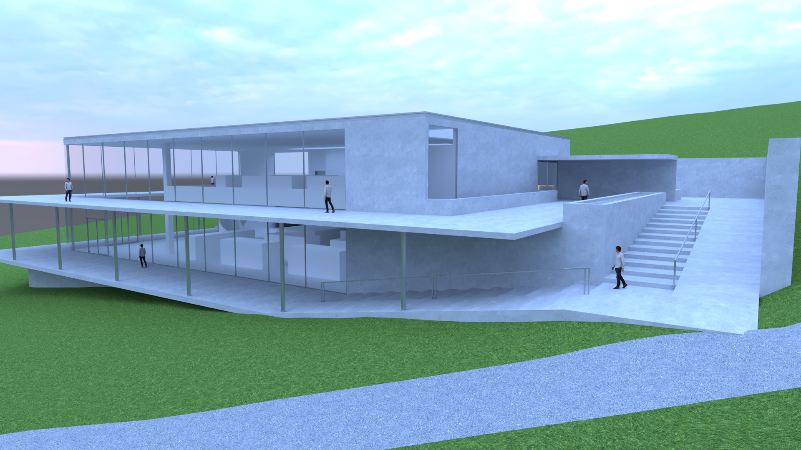
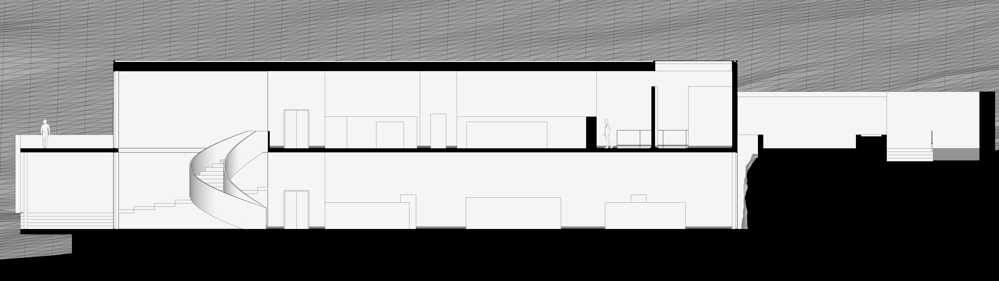
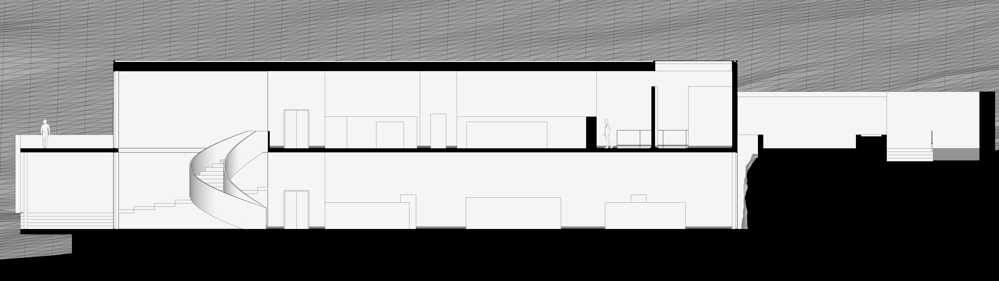

National Museum of Contemporary History
Situated in the expansive Tivoli Park in central Ljubljana, Slovenia, the almost 300-year-old National Museum of Contemporary History rests. However, due to cultural and heritage reasons, the city has requested a new museum to be built elsewhere in the park in replacement of the old one. This new and innovative project will not only increase tourism but will also offer an incredible landmark to the ever-growing city of Ljubljana.
Completed entirely on my own using SketchUp 2023. Rendered with Vray 6.
January - April 2024
Work in progress...

 
